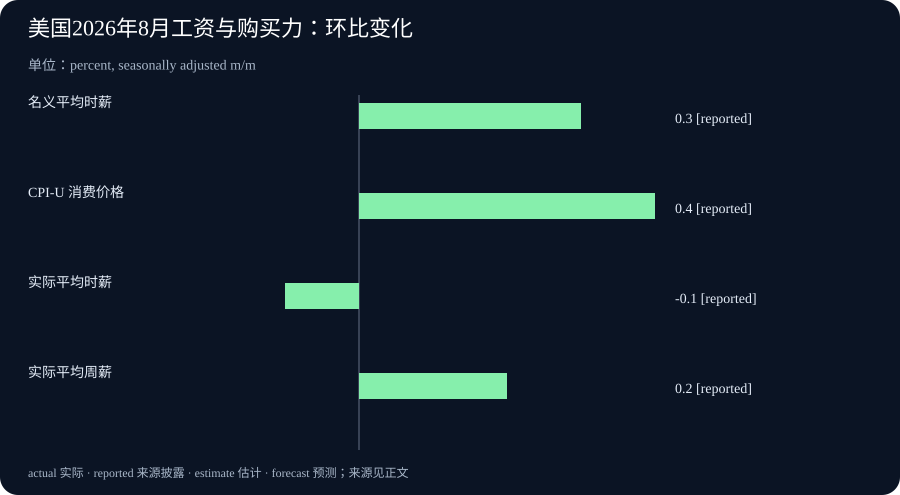

Daily Intelligence
2026-09-12 · Saturday · 上海时间早间版。本期使用 9 月 12 日早间已打开的官方资料，更新昨日关注的美国 CPI 与实际收入，并补充近两日模型和企业平台动态。产品公告、官方统计与本刊分析分开表述；生成时间以元数据中的实际运行时间为准。
Today’s Thesis｜名称没变，决策依据可能已经变了
模型接口名称可以保留而底层模型改变，企业产品的旧组件与新体验可能处于不同交付阶段，工资增加也可能没有带来每小时购买力增加。今天最值得关注的，是这些表面连续性下面的差异。本刊判断：下一阶段的工作重点不只是追逐更新，而是让模型版本、产品状态与指标口径保持可比较。三组新闻并非存在直接因果关系，但共同提醒我们，熟悉的标签不能代替当前证据。
Executive Summary｜执行摘要
- DeepSeek 官方将 V4.1-Flash 发布标为 9 月 10 日；公告说明旧 Flash 接口名称会暂时路由至新模型。接口兼容不等于行为没有变化，已有应用需要重新核对输出。官方公告
- 同一供应方的资料存在一个重要差异：旧公告写 V4 Pro 将在 9 月 14 日转向新 Flash，当前接入首页却写继续提供 V4 Pro 服务、计费不变。本刊保留这一版本差异，不把旧安排当成已经确定会发生的事实。当前接入说明
- Salesforce 的 9 月 11 日马尼拉公告介绍企业 AI 运行架构及统一控制层；新能力和统一体验计划从 FY28 财年早期开始推出，不能写成已经全面上线。公司公告
- 美国 8 月 CPI 经季调环比上涨 0.4%，未经季调同比上涨 3.4%；私营非农全体雇员实际平均时薪环比下降 0.1%，实际平均周薪上升 0.2%。价格、时薪和工时必须一起看。CPI 实际收入
AI Daily｜长上下文与模型换代：兼容的是入口，不一定是结果
DeepSeek 的模型卡称，V4.1-Flash 原生处理图像和文本，支持最长约一百万 token 的上下文；采用因果编码器—解码器结构，输入与输出阶段激活参数量不同。文中有关缓存压缩和性能的结果属于开发方披露，并非本刊独立复测。长上下文上限也不等于模型对窗口内每一条信息都能同样准确地使用。模型卡与评估条件
本次更具操作意义的新闻是版本切换。9 月 10 日公告写明，旧的 Flash 与视觉实验版名称为兼容性继续被接受，但请求会由 V4.1-Flash 处理。因此，调用名称保持不变，不能作为底层模型未变的证据。本期只核对了公开文档，没有发起模型调用，也没有验证任何账户的实际路由。接口迁移说明
V4 Pro 的后续安排则需要特别谨慎。原公告仍保留 9 月 14 日切换的描述；当前接入首页已经写明将继续提供服务，计费方式保持不变。首页没有给出这一段的更新时间，两页尚未完全同步。可以确认的是公开说明存在差异；执行迁移前应再核对当前服务通知与实际返回信息，而不是根据转述自动改动生产配置。原公告 当前首页
本刊的工程分析是，模型更新至少可能影响三个层面：格式是否稳定、同一问题的判断是否变化、长任务的时间与资源开销是否变化。只做一次“能够连通”的检查，最多证明入口可用，不能证明原工作流仍满足验收要求。尤其当模型被用于提取固定字段、引用原文或执行工具调用时，小的行为变化也可能沿下游流程放大。
一个可控的升级方法，是用已有、已获授权且去敏的样本建立回归集，保留正常、边界与异常输入。比较时固定工具、数据和任务要求，记录实际模型版本、结果质量、人工修订量及完整任务耗时。这样才能判断收益来自模型本身，还是来自更长的推理、更简单的样本或不同的执行条件。
对于长上下文，优先测试关键事实能否被定位、冲突版本能否被区分、无关材料是否影响结论。更大的窗口提供了容纳材料的可能性，却没有替组织解决资料过期、权限混杂和定义矛盾。即使全部放得进去，也应明确哪份材料有权决定当前结论；容量不是资料治理的替代品。
Business Daily｜Salesforce 把竞争单位从单个 agent 扩展到企业运行体系
Salesforce 的公告将上下文、推理与编排、动作、治理、安全和模型列为六类能力，并介绍统一的 AI Control Plane，用于查看和管理企业内的 AI。公司强调可组合使用现有技术与第三方系统。这里描述的是厂商架构和产品方向，不能等同于客户已经获得的实施效果。架构说明
交付时间比架构图更直接影响采购。公告称，许多基础技术今天已经可用，但新能力与统一体验计划从 FY28 财年早期开始推出；可用性、包装、价格及升级路径还有待进一步说明。FY28 是公司财年表述，不能直接改写为自然年 2028 年的某个确定日期。采购仍应以当前实际可用、合同涵盖的服务为依据。可用性与限制
本刊的商业解释是，这类平台可能把竞争焦点从“谁的模型更强”转到“谁掌握企业业务定义与流程入口”。客户数据、服务承诺、库存含义和结算规则往往分散在不同系统。若平台能让这些信息被一致地使用，价值可能来自减少重复整合与解释成本，而不只是增加一个聊天界面。是否确实降低成本，需要客户侧的交付证据。
同时，统一平台也可能提高迁移与依赖成本。当业务规则、执行历史和观察指标集中到同一套体系中，更换模型可能容易，更换承载业务语义的平台却未必容易。因此，评估开放性不能只看支持多少连接方式，还应看关键定义能否导出、历史记录能否完整取得、替换一个组件时是否影响其他流程。这些是采购应验证的问题，不是对该产品已经存在缺陷的断言。
企业可以把试点拆成三个实际问题：原有系统的数据是否按同一含义被解释；一个具体流程能否在规定范围内完成；出现争议时能否追溯到数据、规则和动作。用真实业务中已授权的有限样本进行测试，比一次演示覆盖多少功能更有意义。不要把规划中的模块计入当期降本目标，也不要在没有结果数据时提前宣布人力节省。
对小团队，最值得借鉴的是整理业务定义的顺序。先把最常出现的几类客户问题、所需信息和责任人写清，再选择是否需要平台。若“可用库存”“有效客户”“完成交付”等词语内部本来就有不同解释，更复杂的工具只会更快地传播分歧。采购并不能自动替代业务负责人完成定义。
Macro Observation｜时薪购买力下降，周薪却上升：并不矛盾
美国劳工统计局 9 月 11 日公布：8 月 CPI 总指数环比涨幅从 7 月的 0.1% 提高至 0.4%，同比仍为 3.4%；剔除食品和能源的指数环比上涨 0.3%，同比上涨 2.4%。汽油价格当月上涨 3.9%，解释了总指数月度涨幅的三分之一以上。环比使用季调口径，同比使用未经季调口径，不应混排比较。官方 CPI 发布
同日实际收入报告给出了另一面：私营非农全体雇员名义平均时薪环比上升 0.3%，扣除价格变化后实际平均时薪下降 0.1%；平均每周工时上升 0.3%，使实际平均周薪上升 0.2%。这些是总体平均数，8 月相关就业收入估计仍为初步值，不能理解为每位劳动者都经历同样变化。实际收入及表 A-1
本刊的宏观解释是，周收入增加可能来自工作时间变长，而不是每小时回报改善。若只看工资金额，容易忽略购买力；若只看实际时薪，又可能忽略工时带来的收入变化。因此，家庭消费能力、劳动供给与企业成本的讨论，需要分别看价格、工资和工时，不能用单个指标替代全部状况。
同比平稳与环比加快也可以同时成立。同比比较的是当前与一年前，环比比较的是相邻月份；它们回答的时间问题不同。一个月的上行不能独自证明持续趋势，较低的核心同比也不意味着所有生活成本下降。尤其当不同消费类别变化分化时，个人感受到的压力可能与全国平均不同。
对企业经营而言，这些数据提出的是需求结构问题，而不是一条统一调价指令。必须消费与可选消费面对的弹性不同，顾客能否接受提价还取决于替代品、收入与具体使用场景。更稳妥的做法是结合自身订单、复购、客单与退订信息，检查客户是否减少数量或改变购买组合，而不是从一个宏观数字直接推导销售趋势。
本期兑现的是昨日“等待 CPI 实际公布”的观察项，不是对昨日早间内容进行事后改写。后续应继续观察同口径数据，而非把 PPI 与 CPI 恰好相同的月度涨幅当作一对一传导证据；两者统计对象和权重不同。本文不据此推断下一次利率决定或提供交易建议。
Signal Dashboard｜信号仪表盘
| 信号 | 当前证据 | 容易混淆 | 下一步观察 |
|---|---|---|---|
| V4.1-Flash 长上下文 | 开发方模型卡 | 容量上限与任务准确率 | 同样本、同配置回归 |
| 旧 Flash 名称继续接受 | 官方迁移公告 | 名称兼容与模型不变 | 实际返回版本及行为 |
| V4 Pro 后续安排 | 两份官方说明未同步 | 历史计划与当前状态 | 当前服务通知与验证 |
| 企业统一 AI 运行体系 | 厂商架构与分阶段规划 | 已有组件与新体验已交付 | 合同、可用性和试点结果 |
| 实际时薪与周薪分化 | 官方初步统计 | 小时回报与整周收入 | 工时及后续修订 |
Deep Insight｜在快速变化中，先决定什么必须保持不变
团队常把升级看成替换一个组件：换模型、接平台、更新仪表盘。真正困难的不是替换动作，而是知道替换之后哪些性质必须保持。客户仍应得到准确答案，历史数据仍应可比较，责任仍应能够追溯。如果这些不变量没有提前定义，新系统可能在某些指标上更强，却悄悄改变原来依赖它的业务含义。本刊建议先写清比较基准，再讨论升级收益。
第一类不变量是任务含义。例如，客户请求查询合同条款，合格结果应当来自正确版本的合同，并明确适用条件。无论模型上下文变大还是回答更流畅，这个要求都不变。若升级后系统更愿意综合不同版本而不说明冲突，表面上信息更多，实际却可能离任务更远。因此，验收集不能只保存理想答案，还应保存产生该答案所需的证据条件。
第二类不变量是指标定义。一个成本指标要写清是否包含复核与返工，一个收入指标要写清是否扣除价格变化，一个成功率要写清分母是否排除了困难案例。比较时改变分母，往往比改变模型更容易让数字变好。没有统一口径的前后对比，最多说明两个报表显示不同数字，不能自动说明能力提升。统计数据中的时薪与周薪差异，就是理解这种问题的直观例子。
第三类不变量是承诺状态。计划发布、限定试用、普遍可用和已在本企业验收，是不同阶段。它们可以逐步推进，却不能因为同处一张产品图而被合并。采购与内部项目都应保存这些阶段的转换证据：什么已经交付，谁确认可用，适用哪个地区或合同，仍有哪些限制。这样预算与收益才不会建立在尚未兑现的功能上。
在这些基准之上，可以允许实现灵活变化。模型、检索方式、缓存结构和供应商都可以调整，只要新的组合仍满足相同的任务与证据要求。这种可替换性不是只靠标准接口就能得到；还需要可迁移的数据、可理解的业务规则以及能够重放的测试。接口把系统接起来，验收基准才告诉团队是否接对了。
一个具体的落地方式，是选择高频但影响可控的流程，用同一组输入并列运行旧方案与候选方案。比较答案正确性、遗漏、人工改动和完整耗时；先不让候选方案产生真实外部动作。若结论不同，检查到底是新方案发现了旧方案的错误，还是引用了不同资料。差异本身不是失败，无法解释差异才是扩大使用前应解决的问题。
变化记录也应足够小而有用。团队未必需要保存每一段中间对话，但至少应保留影响结果的模型版本、资料版本、关键参数和验收结论。对于供应方文档不一致的情况，记录看到的两个说法与核对时间，不强行抹平冲突。这样即使后续通知再次改变，也能解释当时为什么采取某个动作，而不是凭记忆重写决策依据。
最后，要区分速度与稳定性的价值。对低风险试验，快速尝试可以带来学习；对已承诺的客户服务，可预期行为通常更重要。两者不必使用同一升级节奏。给探索留出空间，同时让正式流程经过回归与清晰切换，就能减少每次新发布带来的被动迁移。真正的适应能力，是允许底层变化而不丢失业务承诺，并能用证据证明这一点。
Tomorrow Watch｜明日观察
- 继续核对 DeepSeek 当前文档与旧公告的差异；不预设 9 月 14 日一定切换，也不把文字更新当成账户实测。
- Salesforce 后续若公布可用性、价格或升级条件，单独记录新证据；在此之前不将规划功能计入已实现收益。
- 保留本次美国 CPI 与实际收入的发布版本，后续按同口径追踪工时与购买力，不用短期变化替代趋势判断。
- 周末为一个现有工作流整理少量回归样本，明确什么结果在更换模型后必须保持一致。
One Chart｜一图：名义时薪、物价与实际收入

图中四项均为 2026 年 8 月经季调环比变化：名义平均时薪 0.3%、CPI-U 0.4%、实际平均时薪 -0.1%、实际平均周薪 0.2%。收入范围为私营非农全体雇员。实际收入经价格指数折算，周薪还受到工时影响；四根柱不是四个可相加的组成部分。公布值经过四舍五入，不能把展示值的简单加减当作精确复算。官方表 A-1
Quote of the Day｜每日一句
“Wherever there is modularity there is the potential for misunderstanding: Hiding information implies a need to check communication.” — Alan J. Perlis
“凡有模块化之处，就有误解的可能；隐藏信息意味着必须检查沟通。”出自 Perlis《编程箴言》第 20 条。本刊借此强调：组件能够连接，并不代表它们对版本、状态和业务含义已有一致理解。原始出处
Action Items｜行动项
- 给一个正在使用的模型记录实际版本，不仅记录接口别名；保留少量固定回归案例。
- 把产品需求分成已可用、已签约但未交付、规划中三类，分别计算当前价值与未来假设。
- 检查一张经营图表的分母、时间范围及价格口径，确保前后比较没有偷换定义。
- 当官方资料出现差异时，保留冲突与核对日期，执行前再确认，不让自动化替团队猜测。